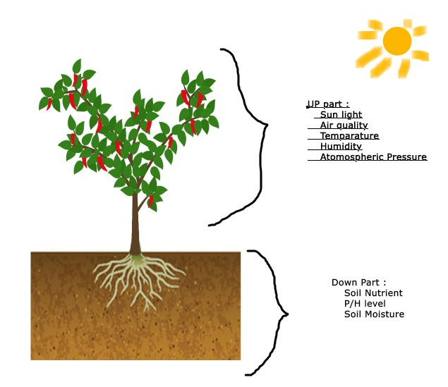
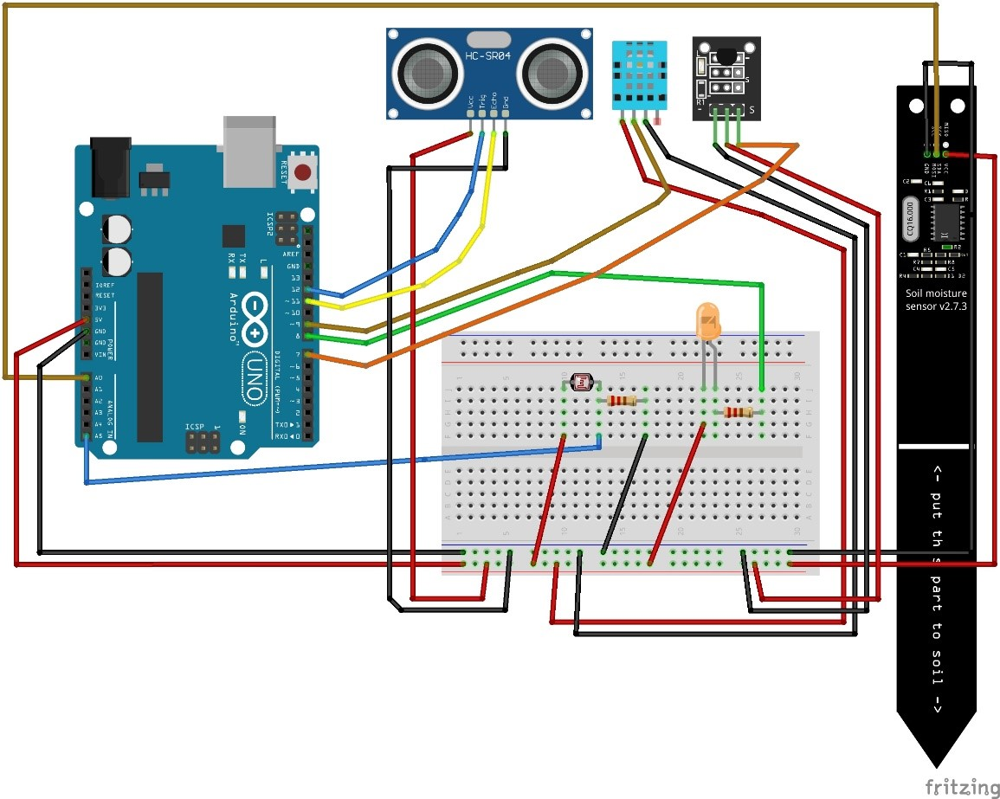
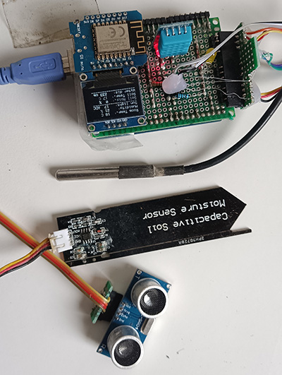
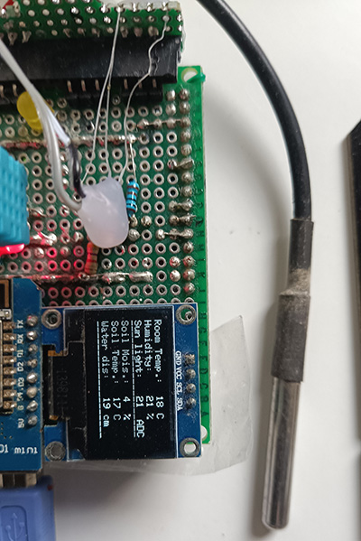

Plant Life cycle Analysis with the help of data mining and Artificial Intelligence (Chili plant)
Concept project for a IOT system

Information needed from tree
- Flower detection
- Fruit detection
- Tree leaves color detection
- Soil moisture detection
- P/H in soil detection
- Soil Nutritional value determine
- Light intensity (Lux) sun light – 120000 Lux
- Temperature detection – soil inside
- Temperature detection – plant environment
- Atmospheric pressure
- Air quality ( Amount of nitrogen and oxygen )
Fritzing Design

Final Prototype


Output sensor data
|
2021-09-02 21:35:46 Start
2021-09-02 21:35:46 Soil mois.:99 %
2021-09-02 21:35:46 Sun light : 6 ADC
2021-09-02 21:35:46 Temperature: 23.00 C
2021-09-02 21:35:46 Humidity: 18.00 %
2021-09-02 21:35:46 water Dis.: 7.35 cm
2021-09-02 21:35:46 water vol.: 890.81 ml
2021-09-02 21:35:47 Soil Temp : 25.69 C
2021-09-02 21:35:47 End |
Thingspeak Data store
Environment Monitoring System for Tree (EMSFT)
thingspeak